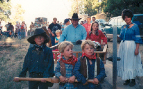

New Years Eve/Day
 For Mom and Dad New Years Eve used to mean dinner at a yummy Chinese restaurant followed by dancing the night away in some over-the-top frock (Evil Knievel dress). But now it's just Chinese take-out followed by a real-time viewing of the ball dropping from New York (three hours early on satellite), then off to the Craftmatic-adjustable for an early night. Hours pass, then suddenly gunfire, screaming and explosions jolt the poor sleeping senior citizens from their bed. In a wild frenzy Dad runs around securing the windows and doors while Mom slaps together a 72-hour kit. But then it dawns on them--it's New Years! Relieved, they remind themselves to stock up on incontinence aids, get back under their electric blanket, snuggle into their orthopedic pillows and go back to sleep. Happy New Year?
For Mom and Dad New Years Eve used to mean dinner at a yummy Chinese restaurant followed by dancing the night away in some over-the-top frock (Evil Knievel dress). But now it's just Chinese take-out followed by a real-time viewing of the ball dropping from New York (three hours early on satellite), then off to the Craftmatic-adjustable for an early night. Hours pass, then suddenly gunfire, screaming and explosions jolt the poor sleeping senior citizens from their bed. In a wild frenzy Dad runs around securing the windows and doors while Mom slaps together a 72-hour kit. But then it dawns on them--it's New Years! Relieved, they remind themselves to stock up on incontinence aids, get back under their electric blanket, snuggle into their orthopedic pillows and go back to sleep. Happy New Year?
Groundhog's Day
No one celebrates it quite like we do. I'm not sure how our Groundhog's tradition got started, but it has to be one of the most hated and feared rituals in all of Christendom. The mere mention of the hog sends ripples of terror through the neighborhood, striking fear in the very hearts of every decent citizen within a 15-mile radius of the Cluff homestead. And that's the way we like it! To organize your own Groundhogging festival visit the Cluff secret guide to Groundhog's Day.
April Fool's Day
Each year at the Cluff house April Fool's Day is celebrated with a flurry of practical jokes, little white lies and downright mean trickery. It is also traditional to prepare a bizarre and painfully colorful April Fool's dinner consisting of (but not limited to) things like purple mashed potatoes, smoking green drinks and sticky yellow goo. A good approach is the key to a successful April Fool's prank. If you are very careful not to mention the impending date, you'll be able to get away with murder. The element of surprise is essential. For practical jokes and ideas go to the 'marital revenge' page.
Spring Break
Every March we'd all pile into the motorhome and head down to Southern California for a week at Grandma Anna's house in Orange County. For breakfast she'd feed us her famous whole-grain pancakes with a glass of fresh squeezed straight-from-the-orchard orange juice, then it was off for a day of sunshine and swimming. Between the beach and Mom's obsession with model homes, there wasn't much time for tourism, but we usually managed to squeeze a little something in (Disneyland or Knott's Berry Farm if we'd been good and The Nut Tree if we'd been naughty). Also, one of our favorite places to eat in Southern Cal is Tito's Tacos in Culver City.
Easter
Grandma Cluff used to hold fantastic Easter Egg Hunts each year in her backyard. She'd hide two types of eggs; the coveted plastic Legg's-pantyhose eggs (filled with candy and prizes) and the lame ol' regular boiled eggs. The older kids usually ended up with all the cool eggs, not because they found them but because they conned the younger kids out of theirs by telling them that Easter, like Christmas, was about giving. "I'll give you my pretty boiled eggs and you give me your stupid plastic ones." At our house Easter baskets were usually given out a day early (which was fine with the kids!) because Mom liked to keep the commercial and religious aspects of Easter separate. The contents of our Easter baskets were usually eaten for breakfast and the rest of the day was spent feeling ill and hiding and finding eggs around the house. Despite Tasha's painstakingly accurate egg-location-maps, every year several eggs beat the system and disappeared--until the stink gave them away two months later!
Memorial Day
For our family, Memorial Day was the unofficial start of summer. We usually spent it in Crescent City, Brookings or in the redwoods at Jedediah Smith River. Wherever we went one thing was for sure; we'd all come home with sunburns.
4th of July
The Fourth of July in Ashland is always the same - and always the best! The day starts when the fighter jets do a fly-by over main street to kick off the big parade downtown. The parade is followed by a festival in Lithia Park then a picnic (with patriotic music) at the band shell. Sometimes, after the parade, we head out to Emigrant Lake to cool off. We either stay all day then watch fireworks from the boat or head back in to snuggle under sleeping bags and watch the fireworks from the fields around the college. Another annual tradition is to sit around for hours after the fireworks in Ashland's one and only traffic jam of the year. When we finally get home we head out to the shop parking lot to set off our own (often illegal) fireworks. Current safety record: one small brush fire, one 2nd degree burn and zero deaths or amputations - so far!
Labor Day
For our family, Labor Day was the unofficial end of summer. Like Memorial Day, we usually spent it at the coast or at Jedediah Smith River in the redwoods. A recent favorite is Sunset Bay. Wherever we went one thing was for sure; our tans would fade away from that day forward.
Halloween
The Bellview Halloween carnival, with its fantastic spook alley, was an annual imperative. A spooky Halloween-themed dinner including things like bloody (tomato) soup, spidery rolls and smoking homemade rootbeer or hot apple cider and caramel apples usually followed. But the highlight of the night was always trick-or-treating. Dad would drive us around target rich environments (Oak Knoll & Quiet Village) and we'd rake in enough candy (pillowcases full, in some instances) to last us for months. Our favorite Halloween movies are 'Arsenic and Old Lace', 'Meet Me in St. Louis', 'Wait Until Dark', and 'Psycho'. For a truly spooky Halloween story go to the 'marital revenge' page.
Thanksgiving
Thanksgiving is a wonderful time of year when the family comes together around the table to reminisce, laugh and be subjected to the most vile European movie ever produced (and that's saying a lot). Mom forces us watch The Emigrant Saga to make us feel thankful for what our ancestors went through - but it really only makes us nauseous. If you haven't seen the film; a child's stomach explodes after eating yeast, a cat fight breaks out on a vomit-infested ship (because a prostitute is spreading lice) and a heavily pregnant mother gets hacked to pieces by a hungry Indian. Appetizing! Aside from that, Thanksgiving is great. The morning is either spent preparing food in the kitchen (Mom and Mel) or playing mud football at the park (the rest of us). At noon(ish) we sit down to eat. The table is decked with mom's vast Pilgrim paraphernalia centerpiece, we have great conversation, we consume vast amounts of food and then (drugged by the tryptophan in the turkey) all settle down for a post-feast nap. The nap generally only lasts 7 minutes (since there are 90 antsy grandchildren tearing through the house) so the festivities get back on track quickly with pioneer stories, wild family limbo contests, wrestling matches, dancing and board games (with Mom's answers to every question always involving a bungee jumper, somehow). We also watch 'It's a Mad, Mad, Mad, Mad World', but, because it's three hours long, the men generally wander off before the end to watch football in the other room.
Christmas Eve
Each year on Christmas Eve we head up to Grandma Anna's for a festive dinner with yummy food and great company. This is also the night the carolers come around and Mom and Dad force us to stand in the freezing doorway with perma-smiles on our faces until the choir stops (usually either when someone passes out or they all go hoarse). Christmas Eve is also spent watching our favorite festive movies; 'It's a Wonderful Life' and 'Meet me in St. Louis'. Before we go to bed, it's traditional for Dad to read us the Christmas story from the Bible. At bedtime, we usually all snuggle up together in one bedroom to giggle and tickle and have pillow fights. We generally get about twelve warnings to quiet down ("Santa only comes when everyone is asleep") before the warnings begin to escalate to threats ("Santa's not coming this year, he's skips over the houses with naughty kids"). So we all settle down and try our hardest to sleep but just as we begin to drift off, suddenly, "Santa's" sleigh lands on our roof with a thump! He jingles his sleigh bells and yells "Ho, ho, ho Merry Christmas!" while his heavy reindeer stomp ferociously on the roof - which freaks all of us out and ensures that we never get back to sleep!
Christmas Day
Christmas Day at the Cluff house traditionally begins at 4am for the hyperactive under-13 population and 10am for Santa's sleepy helpers (aka adults). Trying (and failing) to persuade the parents to get up (in no less than 101 attempts per parent) is also a long-standing tradition. The spurned children can play with their unwrapped Santa presents and go through their stockings but they are not, under any circumstances, allowed to open the wrapped presents without parental supervision. So they eat all the candy from their stockings for breakfast then hop up & down in manic circles until the parents are finally coaxed from their boudoir to clean up the resulting vomit. But Mom gets her revenge. Armed with her video camera she forces the family to get dressed, comb their hair and eat something that doesn't contain sugar before the gifts can be opened. Finally, and just before the kids all wet their pants in anticipation, everyone gathers beneath the Christmas tree to see what there is to see. In the beginning Dad slowly passes each gift to its appropriate recipient, they open it (while the rest of us look on) and are expected to express gratitude before we can move on to the next gift. But by the end, the Christmas wrapping is chest deep and no one can see what's going on anyway--so it becomes a free for all. Then, before we can go off to play with our new treasures, we have the big clean up. Most of the wrapping paper ends up in the wood stove, the boxes in the barn and the toys in the trash within 6 hours of unwrapping (Cluff kids are rough on things). The toys aren't the only thing to bite the dust, by the end of the day our poor vacuum usually passes away after choking on Christmas hooks and broken ornaments each year as well. No matter, Mom always gets a new one from Santa each year (a long standing order). Later in the afternoon we have a big traditional Christmas dinner with family, relatives and friends. It's the perfect end to a perfect day.
Birthdays
Birthdays were always celebrated with a big homemade cake from Grandma Cluff, a card with a dollar for every year from Grandma Anna and a big birthday taffy pull from Mom. See the Birthday Calendar for specific birthday dates.
Bart's Birthday
Each year on April 19th we'd celebrate Bart's birthday by visiting his grave then going to lunch at either North's Chuck Wagon or Hometown Buffet.
Saturday Mornings
We (the kids) loved Saturday mornings. No school, no church, no home-cooked boiled wheat breakfast and no adults! It was a kid's paradise from five to nine AM. We'd usually all get up at the crack of dawn and head to the kitchen where we'd fill giant mixing bowls and pitchers with vast amounts of junky box-cereal which we took into the living room to eat in front of cartoons. But we were so overzealous in our attempt to maximize our only free morning of the week that we'd generally end up sitting for hours watching color-bars until the broadcast day began. By the time the programs finally came on we were so hopped up on sugar that cartoons were no longer an issue--instead we concentrated on bouncing off the walls and spinning around in circles. Every Saturday morning ended the same way; a traumatic headwound from playing chicken man or wrestling followed by four hours of disiplinary housework.
Olive Pit
Every time we took I-5 through California, which was at least several times a year, we'd always swing by our favorite pit stop - The Olive Pit. Though they specialize in green olives, they also stock a whole range of items including oils, mustards, vinegars, nuts and other delectable treats for the epicurious. Recently they've opened a little on-site burger bar that does fantastic olive burgers. But what the kids love most about The Olive Pit are the 10-cent candy sticks. We'd each choose our favorite flavor then have a fierce competition to see who could suck theirs into the sharpest point. The competition usually ended with multiple puncture wounds and a firm reprimand. Ahh, those were the days!
Pomegranates
Each year in late September or early October when the pomegranates were ripe, we'd all pile into the motorhome or the van and head down to Arbuckle California to relieve the trees of their heavy burden. We'd end up with a car-load of pomegranates, sticky pink bodies and scratches from head to toe (pomegranate trees are vicious)--but it was worth it.
Elderberries
Every November, from the top of Dead Indian Road, we harvest these stinky little purple berries to make some of the tasiest jelly ever. It's hard to believe that something so good could come from something so foul smelling.
Hot Dog/Corn Roasts
Despite the obvious dangers involved, our hotdog roasts always began with Mom yelling, "Children! Build the fire!" It was a parent-sanctioned chance to play with matches and fire. No kid could resist. Every repressed child in the neighborhood would immediately begin gathering materials for the big event; wood, broken furniture, garbage, old shoes, toxic household cleaners and fireworks. Through the years we've created our own private ozone hole located directly over our fire pit. Our fires always got off to a roaring start (thanks to Weston's penchant for lighter fluid). The flames were always too hot and too out of control to get within roasting distance for at least an hour. The blackened tree branches overhead are testimony to this fact. Once the flames began to die down and the last of the aerosol cans had rocketed off into space Mom would load a big basket with hot dogs and sausages, sauerkraut, home-grown corn, potato salad, chips, marshmallows and a big thermos of her infamous grape juice and take it down to the pit. The kids would put their dogs onto big metal roasting sticks, plunge them into the fire then run off to the trampoline to play. Half and hour later they'd come back and frantically yank their disintegrated chunks of burning meat from the fire then swing them wildly at the adults for help. Dodging metal hot enough to brand a buffalo, the adults doused the glowing sticks in either the creek or Mom's homemade grape juice. The multipurpose grape juice not only put out fires but was also guaranteed to clean out any intestinal damage done by eating the charred hotdogs. Eating over, we'd sit by the creek, tell stories, laugh and watch the red tailed hawks and great horned owls. Nightfall would set in but we'd continue to reminisce in a cloud of semi-toxic fumes from quietly melting milk jugs. When we ran out of stories we'd sit together in silence and gaze at the night sky, occasionally ducking in unison as a late-launching aerosol can exploded into the night - a Cluff shooting star.
Star Gazing
We've always loved to sleep outside in the summer (except during a brief period when a cougar was said to be stalking our yard). The kids would usually head down to the trampoline while the adults stayed up on the deck. If the sky was clear when we slept outside or when we went camping, we'd stargaze. Dad would pull out his telescope and point out all the constellations and we would all pretend to see what he was describing.
Snow Days
Every winter we'd go up to the snow several times to sled, ski, have snowball fights and freeze to death. But the most traditional snow trip of the year was the annual Christmas tree trek. Just after Thanksgiving we'd get our permit and head up to the snow-capped mountains to hunt down the perfect tree. We'd start with a traditional hot chocolate and chilli lunch, then Dad would lead the way through deep snow into the far reaches of the wilderness and we all followed, single file, using his footprints as a cheat. Miles and hours later, we'd still have nothing. It always seemed as if the best-shaped trees were on top of the gigantic 50-foot trees. Plus, we never agreed; Dad liked "sparse" and Mom liked "full". So we kept looking for the perfect compromise until it began to get dark and the kids started to suffer from frostbite and hypothermia. As we trudged back to the car, empty handed, a sort of desperation set in and, suddenly, lame Charlie Brown trees (that were previously rejected) began looking pretty good. But there was always somebody who objected until finally, 15 feet from the car, we'd settle on an ugly sparse-tree and a lopsided full-tree, then tether them together for a Christmas tree(s) that was so horrifically distorted that gallons of flock had to be used to cover its defects.
Put-Put Cars©
A bizarre tradition with its origins in insanity. The 'car' crawls around on the foor like a spider (not face down on hands and knees but flipped over on hands and feet) saying "put-put-put-put" while the 'passenger' hangs on for dear life. A family home evening favorite.
Jack-the-Tripper©
Dane invented this one. 'The Tripper' is supposed to lie supine in the center of the trampoline while the rest of the group runs the circular guantlet around the perimeter. The Tripper must try to stay as close to the center as possible and may not roll over onto his/her stomach. The object is for the Tripper to catch and trip a victim (who them becomes the Tripper) by any means necessary. This usually entails grabbing a flailing limb and hanging on until the person takes a dive, surrenders or chips a tooth on the metal trampoline frame. More fun (and dangerous) than it sounds.
Chicken Man©
"CHICKEN MAN LEAVING IN 10 SECONDS! 9, 8, 7, 6, 5..." This was the call of the Chicken Man. The response was immediate. Those who heard the call would drop everything and book it to the living room. There they would find Dane squatting next to a couch, finishing the countdown. The first person to jump onto his shoulders before he got to zero, won. The prize was a shoulder ride--but not an ordinary shoulder ride--it was done blindfolded. The rider would cover Chicken Man's eyes with their hands and off they would go. Though Chicken man controlled the speed, he allowed the rider to control direction (thus limiting his liability for injuries incurred) by steering his head left or right. It was the rider's responsibility to prevent pain and death with precision steering around couches and coffee tables and quick evasion of oncoming walls or plants. Another Dane original. Not recommended for those with bad backs or Mom's sense of direction.
Hide'n'Seek (Cluff Style)
Every Saturday night was date night for Mom and Dad and a free-for-all for the kids. Mom would ensure that we were all freshly bathed and dressed in our Little House on the Prairie nightgowns. All the girls had a head-full of pink, spongy curlers and an innocent gleam in their eyes. Mom and Dad would leave safe in the knowledge that everything was ready for the Sabbath. But the second their taillights disappeared from view, on came the forbidden soaps (Dallas, Dynasty & Falcon Crest), out came the box pizza and pot pies and off came the housecoats and innocent expressions. When it got dark we'd head out to the pasture (which was unoccupied and overgrown after Daisy's untimely death) to play hide 'n' seek. Whoever was 'It' had to go into the barn and count to 50 while the rest of us dove for cover in the deep grass. Having to go into the dark barn alone was good incentive for finding a fantastic hiding spot in the grass. Hours later we'd straggle back into the house: itchy, irritated, grass-stained and muddy. We'd fight about who was responsible for locating the curlers and slippers we'd lost in the field until we fell asleep in a giant tangle of scraped knees and puffy eyes. Mom and Dad would return to find a mud trail on their carpet, an unsuitable program blaring on their television and a pile of Fagin's orphans in their livingroom. We'd always get the third degree--but come next Saturday night we'd be back out in the pasture lying low in the grass. Some things are just worth it.
Lawn Maze
When Dane, who was responsible for 99% of our games and injuries, was asked to mow the lawn he'd always make an event of it. He'd never mow boring old straight lines like the rest of the neighbors, he'd always make an elaborate and interesting maze for the rest of us to enjoy (until mom and dad would make him finish the job.
Taffy Pulls
Taffy is a sweet, sticky treat that's surprisingly easy to make. Our taffy recipe is an old-fashioned pioneer tradition that's been handed down through generations. Hosting a taffy pull is a fun way to celebrate your pioneer heritage.
 Stories about the wild west and pioneers crossing the plains and settling new frontiers are traditionally told during a taffy pull to help keep the tradition alive. When Mom does big taffy pulls for school or church, she dresses in pioneer clothing and tells how pioneers didn't have stores to buy treats when they were just getting started so they had parties with family and friends and made their own candy. Young lovers on dates were especially fond of taffy pulls. They would pull it with a boy on one end and a girl on the other so that when they came together they could touch hands and look into each other's eyes. Grandpa Cluff went to taffy pulls all the time for dates growing up on the Cluff Ranch in Arizona. Mom remembers Aunt Blanche having a big taffy pull when she moved to Ashland in the early 50's out behind the house on Park Street.
Stories about the wild west and pioneers crossing the plains and settling new frontiers are traditionally told during a taffy pull to help keep the tradition alive. When Mom does big taffy pulls for school or church, she dresses in pioneer clothing and tells how pioneers didn't have stores to buy treats when they were just getting started so they had parties with family and friends and made their own candy. Young lovers on dates were especially fond of taffy pulls. They would pull it with a boy on one end and a girl on the other so that when they came together they could touch hands and look into each other's eyes. Grandpa Cluff went to taffy pulls all the time for dates growing up on the Cluff Ranch in Arizona. Mom remembers Aunt Blanche having a big taffy pull when she moved to Ashland in the early 50's out behind the house on Park Street.
Pioneer Heritage

From time to time we try to do something to help us remember and celbrate our Pioneer heritage. Once on the 4th of July we all dressed up in Pioneer Clothes and pushed Dad's handcart, loaded with Pioneer things, in the Parade. The local paper had a picture of us and a nice story telling how Dad had made the handcart from scratch. Big pioneer feasts, pioneer campouts and pulling a handcart along a wood trail in pioneer clothes are all things we have done to help us feel connected with our pioneer past.
For more pioneer or wild west information click here
Westward Ho!
Our ancestors came from England, Germany, Norway and Sweden from as early as 1600. The Lamb side (Grandma Anna's mother's maiden name) and the Cluff side came from England. The Cluffs came over in 1636 and joined the church in 1830. This is when they changed their name from Clough to Cluff because the name was so frequently mispronounced (and his father didn't like him joining the church). David Cluff with his 11 sons and one daughter made the Cluff's the largest family in the church today.
For more on our pioneer ancestors visit our Ancestor File in the Family Tree.